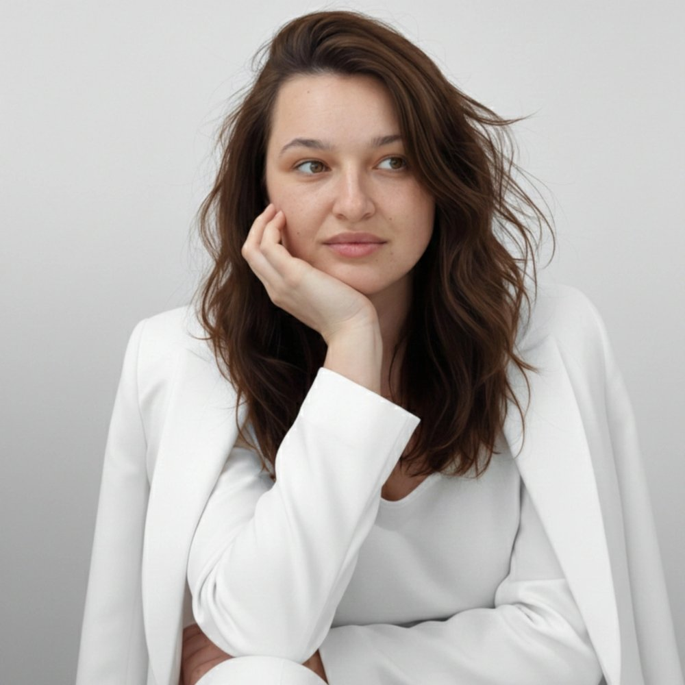

Твоя жизнь уже написана. Пора её прочитать.
Бацзы по дате, времени и месту рождения раскрывает твою природу, таланты, денежные и жизненные циклы. Помогаю разобраться в себе: где твоя сила и деньги, почему в отношениях повторяется один и тот же сценарий и куда двигаться дальше.
- Простым языком, без гаданий и страшилок
- Письменный разбор или видеовстреча
- Онлайн, из любой точки мира
Карта твоей личности, заложенная при рождении
Бацзы («восемь знаков») это китайская система с историей больше двух тысяч лет. По дате, времени и месту рождения строится карта из четырёх столпов. Она у каждого своя и даёт ориентиры: твои сильные и слабые стороны, природные преимущества, в каком направлении двигаться и какие периоды впереди.
- Хочу найти своё дело и понять, где мои деньги
- В отношениях раз за разом повторяется один и тот же сценарий
- Хочу лучше понять своего ребёнка и его таланты
- Чувствую, что пора что-то менять, но не понимаю, куда двигаться
- Впереди важное решение: работа, переезд, своё дело
- Хочу заранее знать, какие годы будут удачными, а какие лучше переждать
Выбери свой запрос
Чтобы начать
Один вопрос, один ответ
Короткий письменный ответ на один конкретный вопрос.
€27
ПодробнееСвернуть
Один вопрос, один ответ
Короткий письменный ответ на один конкретный вопрос. €27 ПодробнееСвернутьХороший первый шаг, чтобы познакомиться с Бацзы. Ты задаёшь один вопрос по одной сфере жизни, я отвечаю по твоей карте конкретно и по делу.
- Развёрнутый ответ на твой вопрос
- Что в карте за этим стоит и почему так складывается
- Как это будет в ближайшие периоды и что делать
Самое частое
Любовь и отношения
Твой сценарий в отношениях, образ партнёра и периоды для встречи.
€117
ПодробнееСвернуть
Любовь и отношения
Твой сценарий в отношениях, образ партнёра и периоды для встречи. €117 ПодробнееСвернутьКонсультация поможет понять, как устроена твоя личная жизнь по карте: почему повторяется один и тот же сценарий, где и когда легче встретить своего человека и как пройти сложные годы в паре.
- Твой сценарий в отношениях и откуда он берётся
- Образ партнёра, который тебе подходит
- Что лучше для тебя: официальный брак или свободный формат
- Где выгоднее знакомиться и подходят ли знакомства в интернете
- Есть ли в карте поздний или повторный брак
- Периоды для знакомств и брака на ближайшие годы
- Ответы на твои вопросы из анкеты
Для пары
Совместимость пары
Две карты рядом: что вас держит вместе, где искрит и как это сгладить.
€147
ПодробнееСвернуть
Совместимость пары
Две карты рядом: что вас держит вместе, где искрит и как это сгладить. €147 ПодробнееСвернутьРазбираю карты двух людей и то, как они взаимодействуют. Подойдёт, если вы уже вместе и хотите меньше ссор, если сомневаетесь, стоит ли продолжать, или если отношения только начинаются и хочется понять, что вас ждёт.
- Характер партнёра: чем он живёт и как устроен по карте
- Что вас сближает и в чём вы друг другу помогаете
- Где ваши точки трения и откуда берутся повторяющиеся ссоры
- Чего каждый из вас ждёт от отношений и где ожидания расходятся
- Настроен ли партнёр на официальный брак или на свободный формат
- Что можно дать партнёру, чтобы ему было с тобой лучше
- Кризисные периоды пары на ближайшие годы и как их пройти
- Есть ли в картах соперники и в какие годы они активнее
- Ответы на твои вопросы из анкеты
Нужны дата, время и место рождения обоих. Если время рождения партнёра неизвестно, разбор всё равно возможен, но часть выводов будет менее точной: я заранее скажу, какая.
Работа и деньги
Профессия и деньги
Где твои деньги, какое дело твоё и как продвигаться.
€117
ПодробнееСвернуть
Профессия и деньги
Где твои деньги, какое дело твоё и как продвигаться. €117 ПодробнееСвернутьКонсультация поможет найти выгодное направление в работе, понять, через что к тебе приходят деньги, и выстроить стратегию, которая подходит именно тебе.
- Свои преимущества и таланты
- Потенциал богатства: какого масштаба деньги тебе по силам
- Профессии и сферы, где ты раскроешься больше всего
- Найм или своё дело, руководитель или специалист
- Выгодные стратегии для продвижения
- Конкуренты и партнёрство: с кем тебе по пути
- Удачные и сложные годы для денег и работы на 10 лет вперёд
- Ответы на твои вопросы из анкеты
Для родителей
Детская консультация
Характер ребёнка, его таланты и как с ним договариваться.
€87
ПодробнееСвернуть
Детская консультация
Характер ребёнка, его таланты и как с ним договариваться. €87 ПодробнееСвернутьКонсультация поможет лучше понять характер и возможности ребёнка, его природные таланты и то, как поддержать его в развитии.
- Качества характера, в том числе самые непростые
- Как с ним договариваться, что его мотивирует
- Природные таланты и склонности
- Потенциал в учёбе
- Какие виды спорта ему подходят
- Непростые периоды ближайших лет и как его поддержать
- Ответы на твои вопросы из анкеты
Вся картина
Полный разбор карты
Личность, деньги, отношения и периоды жизни в одном разборе.
от €167
ПодробнееСвернуть
Полный разбор карты
Личность, деньги, отношения и периоды жизни в одном разборе. от €167 ПодробнееСвернутьРассмотрим ключевые стороны твоей личности, стратегии поведения и влияние периодов жизни. Можно взять только письменный разбор или разбор вместе с видеовстречей, где мы всё обсудим.
- Особенности характера, сильные и слабые стороны
- Самые успешные направления в работе, руководитель ты или исполнитель
- Стратегии продвижения
- Отношения: образ партнёра, где знакомиться и когда придут отношения
- Десятилетние периоды удачи и ближайшие годы
- Как усилить удачу через поведение, окружение, хобби, стиль и образ жизни
- Ответы на твои вопросы из анкеты
С 4 февраля 2027
Рекомендации на 2027 год
Твои лучшие и сложные месяцы года и что делать в каждом.
€97
ПодробнееСвернуть
Рекомендации на 2027 год
Твои лучшие и сложные месяцы года и что делать в каждом. €97 ПодробнееСвернутьПрогноз на 2027 год по китайскому календарю: год начинается 4 февраля 2027 и длится до 3 февраля 2028. Тенденции года, поведение и отношения с людьми.
- Как год Огненной Козы 丁未 складывается с твоей картой
- Как энергия года влияет на характер, поведение и отношения с людьми
- Лучшие и сложные месяцы, что начинать и что отложить
- Деньги, работа и отношения в 2027 году
- Подходит ли год для того, что ты задумываешь
Для консультации нужны дата, время и место рождения. Если точного времени нет, его можно восстановить: напиши мне, обсудим.
Что говорят после разбора
Мария, спасибо за вчерашний разговор, в процессе я многое для себя подметила. В первую очередь, что я сильно себя обесцениваю и не вижу своей ценности как человека. А на самом деле это не так.
Карина · разбор картыЭто очень большая информация для переваривания, я тебе благодарна, я не знаю как. Короче, я тебя всем своим подружкам рекомендовала.
Разбор картыТи завжди вмієш повернути до життя людину серйозно. Дуже екологічно і гарно ти це робиш. Мене двічі промурашило від того, що ти сказала про перехід.
Діана · разбор картыТы мне тогда сделала такой крутой прогноз, что это просто какая-то волшебная песня. Так что я тебе тоже очень благодарна.
ПрогнозЯ вчера целый день переваривала всё, что ты мне сказала. Офигенно.
Разбор
Мария Пантазьева
«Я сама прошла через потерю дома, депрессию и поиск себя. Именно Бацзы помогло мне понять свою природу и найти путь обратно к себе.»
В Бацзы я пришла не сама: мне прочитали мою карту и позвали учиться. Сначала сопротивлялась и не понимала, зачем мне это. Потом начала разбирать карты одну за другой и влюбилась в точность: карта честно говорит о человеке то, что он сам о себе не всегда может сформулировать.
Сначала разбирала карты знакомых, потом пришли клиенты. Чаще всего ко мне обращаются с вопросами о деньгах, отношениях и о том, куда двигаться дальше, когда прежний путь больше не подходит.
Моя задача не просто рассказать, что написано в карте, а помочь применить это в жизни: что делать, чего избегать и где беречь силы. Говорю как есть: не глажу по головке и не пугаю. Карта показывает возможности, решения принимаешь ты.
Часто спрашивают
Что делать, если я не знаю точного времени рождения?
Время рождения можно восстановить по событиям жизни. Напиши мне, обсудим, как это сделать.
Это работает, если я скептик?
Да. Бацзы это расчёт, а не гадание. Ты увидишь, насколько точно карта описывает твои сценарии и сильные стороны.
Как проходит консультация?
Все консультации онлайн. Ты заполняешь анкету с данными рождения и своими вопросами, я готовлю разбор и присылаю PDF. Полный разбор можно дополнить видеовстречей в Zoom: обсудим всё, что в нём написано, запись останется у тебя.
Можно ли подарить консультацию?
Да. Напиши мне, оформим консультацию на того, кому ты её даришь.
Хочешь узнать, что написано в твоей карте?
Напиши мне, где тебе удобнее, и скажи, какая консультация тебя интересует. После оплаты я пришлю короткую анкету.